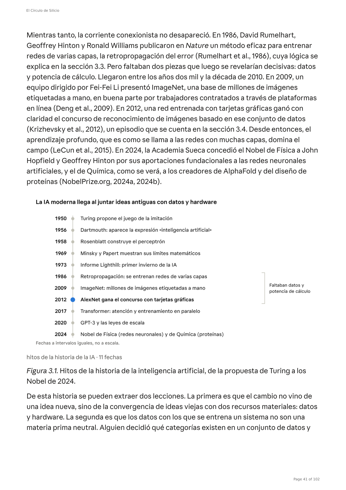

Capítulo 3. La inteligencia artificial y quién puede permitírsela
Si hubiera que elegir una sola imagen para la inteligencia artificial actual, la mayoría de la gente pensaría en una conversación: una ventana de chat, una respuesta que aparece al instante. Parece software puro, algo ligero y casi mágico. Este capítulo sostiene lo contrario: la inteligencia artificial moderna es, en buena medida, industria pesada. Detrás de cada respuesta hay chips fabricados en pocas fábricas, máquinas de litografía que solo produce una empresa, centros de datos del tamaño de campus industriales y una factura energética y de capital que muy pocas organizaciones pueden afrontar. Y es también, de forma literal, una máquina de reducir errores: aprende ajustando poco a poco sus propios fallos, lo que enlaza con el hilo del error que se abrió en el Capítulo 1.
Los datos de este capítulo sobre inversión, mercado y centros de datos corresponden a noviembre de 2026 y cambian muy deprisa, así que se dan como órdenes de magnitud y con su fuente. El capítulo recorre seis etapas: la historia de la idea de inteligencia artificial, la historia del código, la lógica con la que una red neuronal aprende, el papel inesperado de los chips pensados para videojuegos, la distancia entre lo que se publica y lo que se puede costear, y la diferencia entre las inteligencias artificiales especializadas y las generalistas.
3.1 Breve historia de una idea: de Dartmouth al aprendizaje profundo
La inteligencia artificial no nació con los chatbots. Su historia es una sucesión de entusiasmos y desengaños que conviene conocer, porque ayuda a poner en perspectiva el momento actual.
En 1950, Alan Turing publicó un artículo en el que proponía sustituir la pregunta de si las máquinas pueden pensar por una prueba práctica, que llamó el juego de la imitación y que hoy se conoce como test de Turing (Turing, 1950). Seis años después, en el verano de 1956, un grupo de investigadores se reunió en el Dartmouth College a partir de una propuesta firmada por John McCarthy, Marvin Minsky, Nathaniel Rochester y Claude Shannon, en la que aparece por primera vez la expresión “inteligencia artificial” para designar un campo de estudio (McCarthy et al., 1955). La propuesta partía de la conjetura de que cada aspecto del aprendizaje, o de cualquier otro rasgo de la inteligencia, puede describirse con tanta precisión que se puede construir una máquina que lo simule.
Desde el principio hubo dos grandes enfoques. El primero, llamado simbólico, sostenía que la inteligencia consiste en manipular símbolos según reglas lógicas, y que por tanto había que programar esas reglas. De él salieron los sistemas expertos, que en los años setenta y ochenta intentaron codificar el conocimiento de médicos o de ingenieros en largas listas de reglas. El segundo, llamado conexionista, proponía imitar de forma muy simplificada la estructura del cerebro con redes de unidades sencillas que aprenden ajustando sus conexiones. Frank Rosenblatt construyó en 1958 el perceptrón, una de las primeras redes de este tipo (Rosenblatt, 1958), pero en 1969 Marvin Minsky y Seymour Papert demostraron sus límites matemáticos (Minsky y Papert, 1969), y los fondos y el interés se desplazaron hacia el enfoque simbólico.
Después vinieron los llamados inviernos de la inteligencia artificial, periodos en los que las expectativas incumplidas redujeron la financiación. El primero, a mediados de los años setenta, tuvo un detonante conocido: el informe que el matemático James Lighthill elaboró en 1973 para el gobierno británico, muy crítico con los resultados del campo (Lighthill, 1973). El segundo, a finales de los ochenta y principios de los noventa, siguió al hundimiento del mercado de ordenadores especializados y a las limitaciones de los sistemas expertos, que resultaban frágiles y costosos de mantener.
Mientras tanto, la corriente conexionista no desapareció. En 1986, David Rumelhart, Geoffrey Hinton y Ronald Williams publicaron en Nature un método eficaz para entrenar redes de varias capas, la retropropagación del error (Rumelhart et al., 1986), cuya lógica se explica en la sección 3.3. Pero faltaban dos piezas que luego se revelarían decisivas: datos y potencia de cálculo. Llegaron entre los años dos mil y la década de 2010. En 2009, un equipo dirigido por Fei-Fei Li presentó ImageNet, una base de millones de imágenes etiquetadas a mano, en buena parte por trabajadores contratados a través de plataformas en línea (Deng et al., 2009). En 2012, una red entrenada con tarjetas gráficas ganó con claridad el concurso de reconocimiento de imágenes basado en ese conjunto de datos (Krizhevsky et al., 2012), un episodio que se cuenta en la sección 3.4. Desde entonces, el aprendizaje profundo, que es como se llama a las redes con muchas capas, domina el campo (LeCun et al., 2015). En 2024, la Academia Sueca concedió el Nobel de Física a John Hopfield y Geoffrey Hinton por sus aportaciones fundacionales a las redes neuronales artificiales, y el de Química, como se verá, a los creadores de AlphaFold y del diseño de proteínas (NobelPrize.org, 2024a, 2024b).
hitos de la historia de la IA · 11 fechas
Figura 3.1. Hitos de la historia de la inteligencia artificial, de la propuesta de Turing a los Nobel de 2024.
De esta historia se pueden extraer dos lecciones. La primera es que el cambio no vino de una idea nueva, sino de la convergencia de ideas viejas con dos recursos materiales: datos y hardware. La segunda es que los datos con los que se entrena un sistema no son una materia prima neutral. Alguien decidió qué categorías existen en un conjunto de datos y
alguien las etiquetó, y esas decisiones, como han mostrado Kate Crawford y Trevor Paglen (2019) al examinar las categorías de ImageNet, arrastran clasificaciones sociales que luego el sistema reproduce. Esto se retomará en los capítulos 4 y 6.
3.2 Una historia del código: del Apolo 11 a Linux
En julio de 1969, un ordenador de a bordo ayudó a guiar a los astronautas del Apolo 11 hasta la Luna. Su software lo escribió un equipo del Laboratorio de Instrumentación del MIT, dirigido por la ingeniera Margaret Hamilton, en un lenguaje ensamblador creado a medida, casi un dialecto de la máquina (Mindell, 2008). Lo más llamativo es cómo se guardaba ese programa. El ordenador tenía una memoria fija de unas 36.000 palabras, unos 72 kilobytes, menos que una fotografía de móvil actual. No estaba en un disco ni en una cinta, sino en una memoria de cuerda de núcleos: cada bit se codificaba con un hilo de cobre que valía un valor si atravesaba un pequeño anillo magnético y el otro si pasaba por fuera. Esos hilos se tejían a mano en una fábrica, en su mayoría por mujeres, y una vez tejidos no se podían modificar (Mindell, 2008). El error no tenía arreglo posible: el programa tenía que estar bien a la primera. El software, en su forma más literal, era un objeto físico. Su código se conserva y se puede leer, porque desde 2016 está publicado en GitHub, la plataforma de desarrollo colaborativo, gracias a una persona que había sido becaria en la NASA.
En las décadas siguientes, el software se hizo más fácil de escribir y de copiar, y también más caro de poseer. Durante años la norma fue el software propietario: el comprador recibía el programa ya compilado, sin poder ver ni modificar su interior. Frente a eso surgió el movimiento del software libre, impulsado por Richard Stallman y el proyecto GNU, con una idea sencilla: quien recibe un programa debería poder estudiarlo, modificarlo y compartirlo (Stallman, 1985). La antropología ha estudiado este movimiento como una forma de organización social con sus propias normas y su propia idea de la libertad (Kelty, 2008).
En ese contexto ocurrió una historia que se ha contado muchas veces. El 25 de agosto de 1991, un estudiante finlandés de la Universidad de Helsinki, Linus Torvalds, anunció en un foro de internet que estaba haciendo, por afición, un sistema operativo (Torvalds, 1991). Aquella primera versión tenía unas diez mil líneas. En 1992 decidió publicarlo con la licencia GPL, que permite a cualquiera usar y modificar el código, pero obliga a compartir bajo las mismas condiciones las versiones modificadas que se distribuyan. Esa cláusula impide que una empresa se apropie del proyecto y lo cierre. Hoy el núcleo de Linux tiene decenas de millones de líneas y funciona dentro de buena parte de los servidores del mundo y de los teléfonos Android.
Sería fácil contarlo como una historia de altruismo puro, y conviene matizarla. Según los informes anuales de la Fundación Linux, la proporción de contribuciones hechas por desarrolladores no remunerados fue bajando hasta situarse en torno al 8 % en 2017, de modo que la inmensa mayoría del trabajo la hacen personas pagadas por empresas, entre
ellas fabricantes de chips y grandes tecnológicas, que tienen interés comercial en que Linux funcione bien (Corbet y Kroah-Hartman, 2017). Altruismo e interés no se oponen: se sostienen mutuamente, y el jurista Yochai Benkler (2006) ha defendido que esa mezcla es una forma nueva de producción colaborativa. Pero es un buen anticipo de lo que viene, porque el código abierto convive con enormes intereses económicos.
Todo lo anterior se refiere a software escrito línea a línea por personas. La inteligencia artificial actual funciona de otra manera, y de ella trata la siguiente sección.
3.3 Aprender es reducir el error: redes neuronales y Transformers
Imagina que quieres que un ordenador distinga fotos de gatos y de perros. Con el enfoque clásico, tendrías que describir con reglas qué es un gato: orejas puntiagudas, bigotes, y así sucesivamente. Es un camino que se topa enseguida con excepciones. Con el enfoque del aprendizaje automático, haces otra cosa: le muestras miles de fotos etiquetadas y dejas que el sistema ajuste por sí mismo cómo distinguirlas.
El sistema que hace ese ajuste suele ser una red neuronal, una estructura matemática muy simplificada, inspirada de forma lejana en el cerebro. Está formada por capas de pequeñas unidades conectadas entre sí, y cada conexión tiene un número, llamado peso, que determina cuánta influencia tiene. Al principio, esos números son casi aleatorios y el sistema se equivoca constantemente. Durante el entrenamiento, el sistema compara sus respuestas con las correctas, mide cuánto se ha equivocado con una cifra, la llamada función de pérdida, y va retocando poco a poco todos sus pesos para equivocarse menos. Repetido millones de veces, el resultado es una red capaz de reconocer patrones que nadie programó de forma explícita.
La forma de retocar los pesos se puede entender con una imagen. Imagina que estás en lo alto de una montaña, con niebla densa, y quieres llegar al valle. No ves el camino, pero sí notas hacia dónde baja el suelo bajo tus pies, y das un paso en esa dirección. Repites el gesto una y otra vez. Eso es, en esencia, el descenso por gradiente, la técnica con la que se entrenan casi todas las redes. Y la retropropagación, el método que popularizaron Rumelhart, Hinton y Williams (1986), es la manera eficiente de calcular cuánto contribuye cada uno de los millones de pesos al error total, de modo que cada uno pueda corregirse en la dirección adecuada.
Hay una sutileza decisiva. Lo que importa no es el error con los ejemplos que el sistema ha visto, sino el error con ejemplos nuevos. Un sistema que memoriza sus ejemplos de entrenamiento puede tener un error mínimo con ellos y fallar estrepitosamente con cualquier otro, lo que se llama sobreajuste. Aprender, en este sentido técnico, es generalizar: reducir el error con datos que no se han visto. Por eso una parte del esfuerzo consiste en reservar ejemplos que el sistema no usa al entrenarse y que sirven para comprobar si de verdad ha aprendido algo.
Esto tiene consecuencias para el hilo de este libro. En el Capítulo 1 vimos que la evolución es un proceso de variación al azar y selección, y que los experimentos de laboratorio consisten en definir un criterio de éxito y dejar que la variación haga el resto. El aprendizaje de una red neuronal tiene la misma lógica de fondo, definir un error y reducirlo de forma iterativa, con una diferencia importante: en lugar de probar variaciones al azar, aprovecha la información de la pendiente para saber en qué dirección corregir, lo que la hace muchísimo más eficiente. En el Capítulo 2 vimos que los ordenadores convencionales se diseñan para suprimir el error. Las redes neuronales hacen casi lo contrario: toleran una precisión numérica baja, hasta el punto de que el primer procesador diseñado por Google para estos cálculos trabajaba con números enteros de ocho bits (Jouppi et al., 2017). Para estos sistemas, el error no es un fallo que hay que evitar, sino la magnitud que se mide y se reduce.
Hay otra consecuencia. El programa ya no es una lista de instrucciones escritas por personas, sino un conjunto gigantesco de números. En los modelos más grandes, esos números se cuentan por miles de millones o más. Nadie puede leerlos y entender, por inspección, qué sabe el modelo. Es, en este sentido, un tipo de software muy distinto al código del Apolo 11, que se podía leer línea a línea, y esa opacidad es una de las razones por las que la inteligencia artificial plantea preguntas que el software anterior no planteaba.
La arquitectura que lo cambió todo: el Transformer
Durante años, los sistemas que trabajaban con lenguaje procesaban las frases palabra por palabra, en orden, como quien lee con el dedo sobre la línea. Era un método lento y con un defecto: cuando una frase era larga, el sistema tendía a olvidar el principio. En junio de 2017, ocho investigadores de Google publicaron un artículo con un título que se haría famoso: Attention is all you need, “la atención es todo lo que necesitas” (Vaswani et al., 2017). Proponían una arquitectura llamada Transformer, que dejaba de leer palabra a palabra y, en su lugar, miraba toda la frase a la vez, calculando para cada palabra cuáles de las demás son relevantes para entenderla. Es como pasar de leer con el dedo a extender el texto sobre una mesa y mirar de golpe todas las conexiones. A ese mecanismo lo llamaron atención.
El avance tuvo dos efectos. El primero fue que el modelo entendía mejor las relaciones entre palabras lejanas. El segundo, mucho más importante para esta historia, fue que permitía repartir el trabajo entre muchos procesadores a la vez, porque ya no había que esperar a terminar una palabra para empezar la siguiente. Casi todos los grandes modelos de lenguaje actuales parten de esta idea. Hay un dato del propio artículo que merece recordarse: el modelo con el que lograron sus mejores resultados en traducción se entrenó durante unos tres días y medio con ocho procesadores gráficos (Vaswani et al., 2017). Guarda ese número, ocho, porque en la sección 3.5 veremos con qué cifras se trabaja hoy.
Un gran modelo de lenguaje se entrena con una tarea que parece trivial: predecir el siguiente fragmento de texto, y el error que se reduce es lo mal que lo predice. De esa tarea simple, aplicada a cantidades inmensas de texto, surgen capacidades muy variadas, como resumir, traducir, programar o explicar. El modelo GPT-3, presentado en 2020, tenía
175.000 millones de pesos y mostró que esas capacidades crecían con la escala (Brown et
al., 2020). Poco después, un grupo de investigadores describió algo que tiene mucho que ver con el argumento del capítulo: el error de estos modelos disminuye de forma regular y predecible a medida que aumentan el tamaño del modelo, la cantidad de datos y la potencia de cálculo empleada en entrenarlos, lo que se conoce como leyes de escala (Kaplan et al., 2020; Hoffmann et al., 2022). Si el error baja de forma predecible con más cálculo, entonces la potencia de cálculo se convierte en un recurso estratégico: quien puede comprar más, puede entrenar modelos mejores. Esa es la razón por la que los chips pasan a ocupar el centro de esta historia.
Conviene, por último, no confundir un error bajo de predicción con la verdad. Un modelo entrenado para producir el texto más probable puede producir un texto que suena convincente y es falso, o inventar una referencia bibliográfica que parece real, lo que se ha llamado alucinación (Ji et al., 2023). Y existe un debate vivo sobre cuánto “entienden” estos sistemas lo que dicen: hay quien los describe como loros estocásticos que recombinan texto sin comprenderlo (Bender et al., 2021) y quien ve en ellos formas incipientes de comprensión. Este libro no entra en esa discusión, que es filosófica y científica a la vez. Se ocupa de lo que sí se puede decir con seguridad: son sistemas que funcionan reduciendo un error, que su calidad depende en gran medida de la escala y que esa escala tiene un cuerpo material.
3.4 De los videojuegos a la IA: las GPU y el caso de NVIDIA
La historia del hardware de la inteligencia artificial empieza, curiosamente, en el ocio. Los videojuegos en tres dimensiones exigen calcular, decenas de veces por segundo, el color de millones de píxeles. Esos cálculos son sencillos, pero muy numerosos y casi independientes entre sí, así que se pueden hacer a la vez. Para eso nació la unidad de procesamiento gráfico, o GPU. Una forma de entender la diferencia con el procesador habitual, la CPU, es con una cocina. La CPU es un equipo de unos pocos cocineros muy hábiles, capaces de hacer cualquier receta compleja, pero uno detrás de otro. La GPU es una sala con miles de ayudantes que solo saben hacer una tarea simple, pero la hacen todos a la vez. Para preparar un banquete de millones de canapés idénticos, gana la sala de ayudantes.
Entrenar una red neuronal consiste, por debajo, en multiplicar y sumar enormes tablas de números una y otra vez. Esa operación, que los matemáticos llaman multiplicación de matrices, es justo el tipo de trabajo repetitivo y paralelo para el que está pensada una
GPU. Es una coincidencia afortunada: un chip diseñado para pintar explosiones en pantalla resultó ser casi ideal para entrenar redes neuronales.
Pero una coincidencia de hardware no basta. Durante mucho tiempo, programar una GPU para algo que no fueran gráficos era una tarea de especialistas. En noviembre de 2006, la empresa estadounidense NVIDIA lanzó una tarjeta, la GeForce 8800 GTX, con una arquitectura que se podía programar para tareas generales, y en 2007 presentó CUDA, una plataforma de software que permitía a científicos e ingenieros aprovechar esa potencia sin ser expertos en gráficos (Lindholm et al., 2008; Nickolls et al., 2008). Fue una apuesta arriesgada, porque la demanda no estaba clara y parte de la propia empresa dudaba de si distraía del negocio de los videojuegos. Los primeros en aprovecharla fueron grupos de física, química y simulación científica. La inteligencia artificial todavía no era un negocio.
El momento que cambió la historia ocurrió en 2012. Un joven investigador de la Universidad de Toronto, Alex Krizhevsky, junto con Ilya Sutskever y su director, Geoffrey Hinton, entrenó una red neuronal llamada AlexNet para reconocer objetos en imágenes. Lo hizo durante unos cinco o seis días con dos tarjetas gráficas de videojuegos, de las que costaban unos 500 dólares cada una. En el concurso de reconocimiento de imágenes de ese año, su sistema cometió un 15 % de errores, frente a más del 26 % del segundo clasificado, que usaba técnicas tradicionales perfeccionadas durante décadas (Krizhevsky et al., 2012). El impacto fue inmediato. Los laboratorios de todo el mundo entendieron que las GPU permitían entrenar redes neuronales mucho más deprisa que las CPU, y casi todos compraron las de NVIDIA, que además tenían CUDA.
Aquí aparece un concepto clave del capítulo, el efecto cerrojo, o lock-in. Las herramientas con las que los investigadores programaban sus modelos, como TensorFlow o PyTorch, se construyeron primero sobre CUDA (Abadi et al., 2016; Paszke et al., 2019), y a su alrededor surgieron bibliotecas de funciones ya optimizadas para estas tarjetas (Chetlur et al., 2014), tutoriales, cursos universitarios y ofertas de empleo que pedían experiencia con CUDA. Un equipo que quisiera cambiar a otra marca de chips tendría que reescribir y volver a validar mucho código, y renunciar a todo ese ecosistema. Conviene entender que este cerrojo no se basa en una patente ni en una prohibición. Es una cuestión de gravedad: cuanta más gente usa una herramienta, más recursos se crean a su alrededor y más caro resulta marcharse. Es un mecanismo que los economistas conocen bien. El historiador económico Paul David (1985) lo explicó con el ejemplo del teclado QWERTY, y el economista Brian Arthur (1989) lo formalizó como el fenómeno de los rendimientos crecientes: una tecnología que se adelanta por azar puede acabar dominando aunque no sea la mejor, porque su ventaja inicial se refuerza a sí misma.
Hay matices importantes. Existen alternativas, como los chips de AMD, los procesadores TPU que Google diseña para uso propio (Jouppi et al., 2017) o los chips que otras grandes empresas desarrollan para sus centros de datos. En 2026, Google comercializa capacidad
de sus TPU a terceros, y varios grandes laboratorios de inteligencia artificial han anunciado compras de cientos de miles de ellos. Los analistas debaten cuánto del “foso” de NVIDIA es tecnología y cuánto es ecosistema. Las estimaciones de cuota de mercado varían mucho según quién las calcule y cómo: la mayoría sitúa a NVIDIA entre un 70 % y un 85 % de los ingresos de los chips de IA para centros de datos, algo por debajo de los picos de hace unos años. No existe una cifra auditada, y el porcentaje de ingresos no es lo mismo que el de unidades vendidas. Lo que sí es seguro es que el mercado está muy concentrado, y que su tamaño es difícil de imaginar: en el trimestre que terminó en octubre de 2025, NVIDIA facturó unos 57.000 millones de dólares, de los que 51.200 millones, alrededor del 90 %, correspondieron a sus centros de datos (NVIDIA, 2025). Un año después, en el trimestre que terminó el 25 de octubre de 2026, facturó 115.800 millones de dólares, más del doble que en el mismo trimestre del año anterior, y sus centros de datos aportaron 107.600 millones, alrededor del 93 % del total. Su previsión para el trimestre siguiente es de unos 130.000 millones, sin contar con ningún ingreso de centros de datos procedentes de China (NVIDIA, 2026).
Hay un detalle que conecta este capítulo con el anterior. NVIDIA diseña sus chips, pero no los fabrica. Los produce, sobre todo, la taiwanesa TSMC, con máquinas de litografía que solo construye la holandesa ASML. Además, estos chips necesitan memorias especiales de muy alta velocidad, fabricadas por muy pocas empresas del mundo. La inteligencia artificial más avanzada depende, por tanto, de una cadena con varios eslabones, cada uno de ellos controlado por un puñado de organizaciones. Las restricciones a la exportación de estos chips a China, a su vez, han convertido la cadena en un asunto de política exterior: según la propia empresa, su previsión más reciente no contaba con ingresos de centros de datos procedentes de ese país. Volveremos sobre las consecuencias geopolíticas de esta concentración en el Capítulo 6.
3.5 Código abierto, hierro cerrado: el embudo del capital
Una de las cosas que más sorprenden de la inteligencia artificial actual es lo mucho que se comparte. El artículo que presentó el Transformer es público. Las herramientas con las que se programan los modelos, como PyTorch, son de código abierto. Y muchos laboratorios publican los modelos ya entrenados, lo que permite a cualquiera descargarlos. A primera vista, parecería un terreno muy democrático. Sin embargo, una analogía ayuda a ver por qué no lo es del todo. Publicar la receta de un pan no te da una panadería industrial. Y aquí la panadería cuesta cifras difíciles de imaginar.
Recuerda el dato del artículo del Transformer: tres días y medio con ocho procesadores gráficos. Hoy los mayores proyectos de inteligencia artificial trabajan con otro orden de magnitud. Los centros de datos más grandes dedicados a entrenar modelos reúnen cientos de miles de aceleradores y, según los anuncios de sus propietarios, los proyectos en marcha apuntan a un millón o más. Su consumo eléctrico se mide ya en gigavatios, el
orden de magnitud de una central nuclear grande. Entre los más citados están los centros Colossus de la empresa xAI, en Memphis (Tennessee), que a finales de 2026 figuraban, según las estimaciones de Epoch AI recogidas por la prensa, como los mayores del mundo por capacidad de cálculo, y el campus de Stargate en Abilene (Texas), impulsado por OpenAI y Oracle. Las cifras exactas de estos proyectos proceden en gran parte de anuncios de las propias empresas y tienen amplios márgenes de error, pero el orden de magnitud no está en discusión.
El instituto de investigación Epoch AI ha estimado cuánto ha costado entrenar los modelos más grandes de cada época. Su análisis concluye que el coste de entrenar los modelos más exigentes en cálculo se ha multiplicado por algo más de dos cada año desde 2016. Para modelos como GPT-4 o Gemini Ultra, sus estimaciones hablan de decenas a cientos de millones de dólares, y si la tendencia continuara, los mayores entrenamientos superarían los mil millones de dólares hacia 2027, momento en el que, advertían los autores, solo podrían financiarlos organizaciones con muchísimos recursos (Cottier et al., 2024). El desglose es interesante. La mayor parte de ese coste, entre la mitad y dos tercios, corresponde al hardware, es decir, chips, servidores y redes. Entre un tercio y la mitad son salarios de los equipos de investigación. La electricidad en sí es una fracción pequeña del coste de un entrenamiento. Eso no significa que la energía no importe: lo que cuesta no es el kilovatio, sino conseguir conectar a la red, a tiempo y en el lugar adecuado, potencias del tamaño de una ciudad.
Para dimensionar la inversión, conviene mirar lo que gastan las grandes tecnológicas. Según las previsiones que Amazon, Alphabet (Google), Microsoft y Meta dieron al presentar sus resultados del tercer trimestre de 2026, en octubre, estas cuatro empresas planean invertir del orden de entre 720.000 y 745.000 millones de dólares en 2026, una cifra que ha ido subiendo a lo largo del año y que se destina, en su mayoría, a centros de datos, chips y redes para inteligencia artificial. Las empresas calculan estos gastos de forma distinta, y algunas incluyen arrendamientos y otras no, así que el total es orientativo, pero el orden de magnitud es el que importa. Hay un dato que muestra hasta qué punto se ha acelerado el ritmo: según sus propios informes, en ese trimestre dos de ellas, Alphabet y Meta, gastaron en inversión más de lo que generaron en caja, y Alphabet anunció que su gasto aumentará de forma significativa en 2027. Es una cantidad de dinero que ninguna universidad, ninguna empresa emergente típica y ninguna administración pública de tamaño medio puede movilizar para una sola tecnología (Amazon, Alphabet, Microsoft y Meta, 2026).
Para entender qué significa que algo sea abierto, ayuda distinguir cuatro niveles de acceso. El primero es usar: cualquiera puede conversar con un modelo, gratis o de pago, y es el nivel más democrático. El segundo es adaptar y ejecutar: quien tiene acceso a modelos de pesos abiertos puede descargarlos, ajustarlos a una tarea y ejecutarlos en equipos propios, lo que exige algo de hardware pero está al alcance de universidades,
empresas pequeñas y aficionados con equipo. El tercero es servir a gran escala: atender a millones de usuarios a la vez exige centros de datos. El cuarto es entrenar desde cero un modelo de frontera, que exige cientos de millones de dólares en hardware, equipos especializados y acceso a la energía, y solo lo alcanzan un puñado de empresas y de estados. El embudo es este: cuanto más arriba en la escala, más abierta es la puerta, y cuanto más abajo, más se estrecha. Y el nivel que más decide el rumbo de la tecnología es precisamente el último.
cuatro niveles de acceso a la IA · de usar a entrenar
Figura 3.2. Los cuatro niveles de acceso a la inteligencia artificial: la puerta se estrecha a medida que se desciende.
Hay dos matices que impiden contar esta historia como una simple tragedia. El primero es una cuestión de vocabulario. Lo que muchos llaman modelos de código abierto son, en rigor, modelos de pesos abiertos: se publica el conjunto de números del modelo ya entrenado, pero normalmente no los datos con los que se entrenó ni todo el proceso para reproducirlo. Es como recibir el pan ya hecho, con permiso para usarlo y modificarlo, pero sin la masa madre ni la receta completa. Además, cada modelo viene con una licencia con sus propias condiciones.
El segundo matiz es más importante: los modelos abiertos han recortado mucho la distancia con los cerrados. Según el análisis de Epoch AI, desde enero de 2026 los modelos abiertos más capaces han ido, en promedio, unos cuatro meses por detrás de los cerrados más avanzados (Edwards y Emberson, 2026), aunque en capacidades relacionadas con la ciberseguridad esa distancia es algo mayor, de seis a siete meses. El
Informe Internacional sobre la Seguridad de la IA de 2026 situaba la brecha en menos de un año en las principales pruebas (Bengio et al., 2026). Gran parte de esa carrera la protagonizan laboratorios chinos, como los de las familias Qwen, DeepSeek o Kimi, mientras que, según varios informes de 2026, Meta, que había sido la gran valedora de los modelos abiertos de Occidente, había frenado esa línea para concentrarse en modelos cerrados. Es una situación cambiante y conviene mirarla con cautela.
Que la brecha sea corta no invalida el argumento del embudo, pero lo matiza. Acceder a un modelo no equivale a poder crearlo, y quien lo crea decide qué se publica, cuándo y con qué condiciones. Aunque los modelos abiertos permiten a muchos actores trabajar con una capacidad que antes estaba reservada a unos pocos, siguen dependiendo, en último término, de los mismos chips, que fabrican las mismas pocas empresas. La investigación académica lo nota. Varios estudios han documentado una brecha de cómputo entre la industria y las universidades: los grupos académicos disponen de una fracción de la capacidad de las grandes empresas, lo que limita su capacidad de entrenar, reproducir y auditar los modelos más grandes (Ahmed y Wahed, 2020; Besiroglu et al., 2024), y la industria ha pasado a dominar la investigación de frontera en inteligencia artificial (Ahmed et al., 2023).
Hay un paralelismo con la historia de Linux que cierra bien este apartado. El código de Linux es libre, pero buena parte de los servidores que lo ejecutan están en centros de datos que pertenecen a muy pocas empresas. El software puede ser comunal mientras la infraestructura que lo hace funcionar es privada.
3.6 IA especialista e IA generalista
Para ver otra cara de la inteligencia artificial conviene volver a la biología del primer capítulo. Las proteínas son las moléculas que hacen casi todo en una célula. Cada una nace como una cadena de piezas llamadas aminoácidos que, al terminar de fabricarse, se pliega hasta adoptar una forma tridimensional muy concreta, y esa forma determina lo que hace. Conocer la forma de una proteína ayuda a entender una enfermedad o a diseñar un fármaco. Deducir esa forma a partir de la secuencia de aminoácidos fue durante unos cincuenta años uno de los grandes problemas abiertos de la biología. Averiguar la forma de una sola proteína por métodos experimentales, como la cristalografía o la microscopía electrónica criogénica, podía llevar meses o años y costar mucho dinero, y en seis décadas de trabajo los biólogos habían determinado del orden de doscientas mil estructuras (Varadi et al., 2022).
El sistema AlphaFold, desarrollado por Google DeepMind, cambió el panorama. Está entrenado específicamente para predecir la forma de una proteína a partir de su secuencia (Jumper et al., 2021). La base de datos de AlphaFold, que gestiona el Instituto Europeo de Bioinformática (EMBL-EBI) junto con DeepMind, arrancó en 2021 con algo más de 360.000 predicciones, entre ellas todas las proteínas humanas conocidas, y hoy
contiene unos 200 millones de estructuras de más de un millón de organismos (Varadi et al., 2022). En 2024, el Nobel de Química reconoció este avance: lo recibieron Demis Hassabis y John Jumper, de DeepMind, por la predicción de estructuras, y David Baker, por el diseño computacional de proteínas (NobelPrize.org, 2024b).
AlphaFold es un buen caso para deshacer una simplificación frecuente, la de que las inteligencias artificiales científicas son cerradas y las generalistas abiertas. La realidad es un gradiente. El código y los datos de AlphaFold 2 se publicaron, y la base de datos es de acceso libre y gratuito. La versión 3, presentada en mayo de 2024, se ofreció al principio solo a través de un servidor web con límites de uso, lo que provocó críticas de muchos científicos por falta de transparencia (Abramson et al., 2024). En noviembre de 2024, DeepMind publicó el código y, bajo solicitud, los parámetros del modelo, pero solo para uso académico y no comercial. Detrás hay una tensión real: la empresa hermana, Isomorphic Labs, trabaja en el desarrollo de fármacos con esta tecnología. Es decir, ni todo es abierto ni todo es cerrado, y los términos de acceso a cada herramienta dependen de intereses científicos y comerciales que conviene conocer.
AlphaFold funciona tan bien por razones que se pueden resumir en tres. Tiene una tarea muy concreta, con un resultado definido: una forma tridimensional. Se alimenta de décadas de ciencia compartida, porque se entrenó con las estructuras que miles de investigadores habían ido depositando en bases de datos públicas. Y se puede comprobar contra la realidad, porque sus predicciones se pueden contrastar con estructuras determinadas en el laboratorio, lo que permite medir sus aciertos y sus fallos. Tiene también límites que los propios científicos subrayan: predice formas estáticas, no el movimiento de las moléculas, y funciona peor en las regiones desordenadas de las proteínas. Es una herramienta potentísima que se usa junto con la experimentación, no en su lugar.
Los grandes modelos de lenguaje son lo opuesto a AlphaFold. Se entrenan con cantidades enormes de texto para predecir el siguiente fragmento, y de esa tarea simple surgen capacidades muy variadas: resumir, traducir, programar, explicar. Pero su generalidad tiene un precio. Como no tienen un resultado único que se pueda comprobar con facilidad, también pueden equivocarse con aplomo, dando una respuesta que suena convincente y es falsa, o inventando una referencia bibliográfica que parece real (Ji et al., 2023). Este libro, que está redactado con la ayuda de uno de estos sistemas, lo recuerda a lo largo de sus páginas: por eso sus datos concretos conviene contrastarlos, y por eso la bibliografía de cada capítulo es parte del libro y no un adorno.
La diferencia entre ambos tipos de inteligencia artificial sugiere una especie de división del trabajo, y conecta con el hilo del error. Donde hay una forma objetiva de comprobar si la respuesta es correcta, como en una estructura proteica, los especialistas brillan y su error se puede medir y reducir. Donde la tarea es abierta, ambigua y verbal, los generalistas son más flexibles pero más difíciles de verificar, y el error puede pasar
inadvertido. En la práctica, además, ambos mundos empiezan a combinarse: un modelo generalista puede apoyarse en herramientas especialistas para resolver una parte del problema.
AlphaFold nos deja, por último, una enseñanza que viene bien tener presente al entrar en la computación cuántica. Este avance, que ha cambiado la biología, no ha necesitado ningún ordenador cuántico: se ha logrado con inteligencia artificial convencional, corriendo en chips de los de siempre. Cuando en el Capítulo 5 hablemos de lo que la computación cuántica podría aportar a la química y a la biología, conviene recordar que la pregunta no es si la inteligencia artificial puede ayudar a diseñar moléculas, porque ya lo hace, sino qué problemas concretos quedan fuera de su alcance.
Para cerrar el capítulo
Este capítulo ha recorrido cuatro ideas. La primera es que el software ha cambiado de naturaleza: del código tejido a mano del Apolo 11 hemos pasado a modelos cuyo programa es un conjunto de números que nadie lee, y que aprenden reduciendo un error. La segunda es que la inteligencia artificial moderna es una industria de hardware: un chip pensado para jugar, un software que lo abrió a otros usos y una arquitectura que permitía repartir el trabajo se combinaron para formar la infraestructura actual, y las leyes de escala hacen de la potencia de cálculo un recurso estratégico. La tercera es que abierto no significa repartido: se publican recetas, pero las fábricas cuestan cantidades que muy pocos pueden pagar, y el nivel que decide el rumbo de la tecnología es el más cerrado. La cuarta es que las inteligencias artificiales no son todas iguales, y que los términos de acceso a cada una son un gradiente y no una dicotomía.
Queda una pregunta que no es técnica. Hemos hablado de inteligencia, aprendizaje, redes neuronales, memoria y nube sin detenernos a pensar en esas palabras, que vienen de la biología, de la psicología y hasta de la meteorología, y que moldean lo que creemos entender de estas máquinas. De ellas se ocupa el siguiente capítulo.
Lecturas recomendadas
Chris Miller, Chip War: la historia de la industria de los semiconductores y de su
dimensión geopolítica.
Kate Crawford, Atlas of AI: una mirada crítica sobre los recursos materiales y humanos
que hay detrás de la inteligencia artificial.
Melanie Mitchell, Artificial Intelligence: A Guide for Thinking Humans: una
introducción rigurosa y escéptica a lo que la inteligencia artificial sabe y no sabe
hacer.
David Mindell, Digital Apollo: la historia del ordenador del Apolo 11 y del trabajo
humano que lo hizo posible.Christopher Kelty, Two Bits: un estudio antropológico del movimiento del software libre.
Referencias del capítulo 3
Abadi, M., Barham, P., Chen, J., Chen, Z., Davis, A., Dean, J., … Zheng, X. (2016). TensorFlow: A system for large-scale machine learning. En Proceedings of the 12th USENIX Symposium on Operating Systems Design and Implementation (OSDI ’16) (pp. 265-283). USENIX.
Abramson, J., Adler, J., Dunger, J., Evans, R., Green, T., Pritzel, A., … Jumper, J. M. (2024). Accurate structure prediction of biomolecular interactions with AlphaFold 3. Nature, 630(8016), 493-500.
Ahmed, N., y Wahed, M. (2020). The de-democratization of AI: Deep learning and the compute divide in artificial intelligence research (arXiv:2010.15581).
Ahmed, N., Wahed, M., y Thompson, N. C. (2023). The growing influence of industry in AI research. Science, 379(6635), 884-886.
Amazon, Alphabet, Microsoft y Meta. (2026, octubre). Resultados del tercer trimestre de 2026 y previsiones de gasto de capital [Informes de resultados y presentaciones ante la SEC].
Arthur, W. B. (1989). Competing technologies, increasing returns, and lock-in by historical events. The Economic Journal, 99(394), 116-131.
Bender, E. M., Gebru, T., McMillan-Major, A., y Shmitchell, S. (2021). On the dangers of stochastic parrots: Can language models be too big? En Proceedings of the 2021 ACM Conference on Fairness, Accountability, and Transparency (FAccT ’21) (pp. 610-623). ACM.
Bengio, Y., et al. (2026). International AI safety report 2026.
Benkler, Y. (2006). The wealth of networks: How social production transforms markets and freedom. Yale University Press.
Besiroglu, T., Bergerson, S. A., Michael, A., Heim, L., Luo, X., y Thompson, N. (2024). The compute divide in machine learning: A threat to academic contribution and scrutiny? (arXiv:2401.02452).
Brown, T. B., Mann, B., Ryder, N., Subbiah, M., Kaplan, J., Dhariwal, P., … Amodei, D. (2020). Language models are few-shot learners. Advances in Neural Information Processing Systems, 33, 1877-1901.
Chetlur, S., Woolley, C., Vandermersch, P., Cohen, J., Tran, J., Catanzaro, B., y Shelhamer, E. (2014). cuDNN: Efficient primitives for deep learning (arXiv:1410.0759).
Corbet, J., y Kroah-Hartman, G. (2017). 2017 state of Linux kernel development. The Linux Foundation.
Cottier, B., Rahman, R., Fattorini, L., Maslej, N., y Owen, D. (2024). The rising costs of training frontier AI models (arXiv:2405.21015).
Crawford, K., y Paglen, T. (2019). Excavating AI: The politics of images in machine learning training sets. https://excavating.ai
David, P. A. (1985). Clio and the economics of QWERTY. The American Economic Review, 75(2), 332-337.
Deng, J., Dong, W., Socher, R., Li, L.-J., Li, K., y Fei-Fei, L. (2009). ImageNet: A large-scale hierarchical image database. En 2009 IEEE Conference on Computer Vision and Pattern Recognition (pp. 248-255). IEEE.
Edwards, J., y Emberson, L. (2026, 29 de mayo). Open models lag state-of-the-art closed models by 4 months. Epoch AI Data Insights.
Hoffmann, J., Borgeaud, S., Mensch, A., Buchatskaya, E., Cai, T., Rutherford, E., … Sifre, L. (2022). Training compute-optimal large language models (arXiv:2203.15556).
Ji, Z., Lee, N., Frieske, R., Yu, T., Su, D., Xu, Y., … Fung, P. (2023). Survey of hallucination in natural language generation. ACM Computing Surveys, 55(12), 1-38.
Jouppi, N. P., Young, C., Patil, N., Patterson, D., Agrawal, G., Bajwa, R., … Yoon, D. H. (2017). In-datacenter performance analysis of a tensor processing unit. En Proceedings of the 44th Annual International Symposium on Computer Architecture (ISCA ’17) (pp. 1-12). ACM.
Jumper, J., Evans, R., Pritzel, A., Green, T., Figurnov, M., Ronneberger, O., … Hassabis, D. (2021). Highly accurate protein structure prediction with AlphaFold. Nature, 596(7873), 583-589.
Kaplan, J., McCandlish, S., Henighan, T., Brown, T. B., Chess, B., Child, R., … Amodei, D. (2020). Scaling laws for neural language models (arXiv:2001.08361).
Kelty, C. M. (2008). Two bits: The cultural significance of free software. Duke University Press.
Krizhevsky, A., Sutskever, I., y Hinton, G. E. (2012). ImageNet classification with deep convolutional neural networks. Advances in Neural Information Processing Systems, 25, 1097-1105.
LeCun, Y., Bengio, Y., y Hinton, G. (2015). Deep learning. Nature, 521(7553), 436-444.
Lighthill, J. (1973). Artificial intelligence: A general survey. En Artificial intelligence: A paper symposium. Science Research Council.
Lindholm, E., Nickolls, J., Oberman, S., y Montrym, J. (2008). NVIDIA Tesla: A unified graphics and computing architecture. IEEE Micro, 28(2), 39-55.
McCarthy, J., Minsky, M. L., Rochester, N., y Shannon, C. E. (1955). A proposal for the Dartmouth summer research project on artificial intelligence.
Mindell, D. A. (2008). Digital Apollo: Human and machine in spaceflight. MIT Press.
Minsky, M., y Papert, S. (1969). Perceptrons: An introduction to computational geometry. MIT Press.
Nickolls, J., Buck, I., Garland, M., y Skadron, K. (2008). Scalable parallel programming with CUDA. ACM Queue, 6(2), 40-53.
NobelPrize.org. (2024a). The Nobel Prize in Physics 2024 [Comunicado de prensa]. Real Academia Sueca de Ciencias.
NobelPrize.org. (2024b). The Nobel Prize in Chemistry 2024 [Comunicado de prensa]. Real Academia Sueca de Ciencias.
NVIDIA. (2025, 19 de noviembre). NVIDIA announces financial results for third quarter fiscal 2026 [Comunicado de prensa].
NVIDIA. (2026). NVIDIA announces financial results for third quarter fiscal 2027 [Comunicado de prensa].
Paszke, A., Gross, S., Massa, F., Lerer, A., Bradbury, J., Chanan, G., … Chintala, S. (2019). PyTorch: An imperative style, high-performance deep learning library. Advances in Neural Information Processing Systems, 32, 8024-8035.
Rosenblatt, F. (1958). The perceptron: A probabilistic model for information storage and organization in the brain. Psychological Review, 65(6), 386-408.
Rumelhart, D. E., Hinton, G. E., y Williams, R. J. (1986). Learning representations by back- propagating errors. Nature, 323(6088), 533-536.
Stallman, R. (1985). The GNU manifesto. Dr. Dobb’s Journal of Software Tools, 10(3), 30-35.
Torvalds, L. (1991, 25 de agosto). What would you like to see most in minix? [Mensaje en el grupo de noticias comp.os.minix].
Turing, A. M. (1950). Computing machinery and intelligence. Mind, 59(236), 433-460.
Varadi, M., Anyango, S., Deshpande, M., Nair, S., Natassia, C., Yordanova, G., … Velankar, S. (2022). AlphaFold Protein Structure Database: Massively expanding the structural coverage of protein-sequence space with high-accuracy models. Nucleic Acids Research, 50(D1), D439-D444.
Vaswani, A., Shazeer, N., Parmar, N., Uszkoreit, J., Jones, L., Gomez, A. N., … Polosukhin, I. (2017). Attention is all you need. Advances in Neural Information Processing Systems, 30, 5998-6008.
